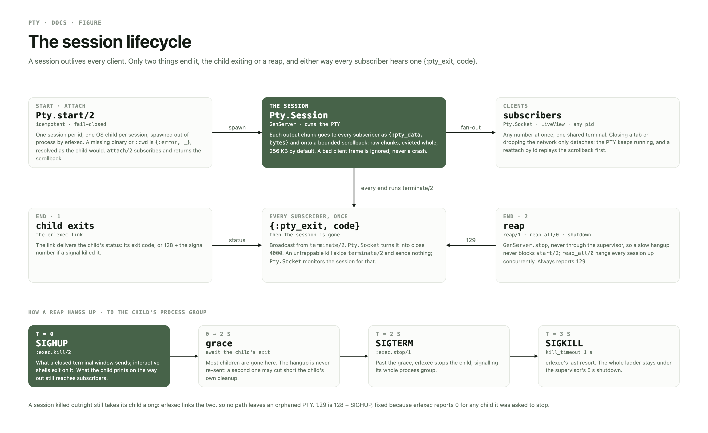
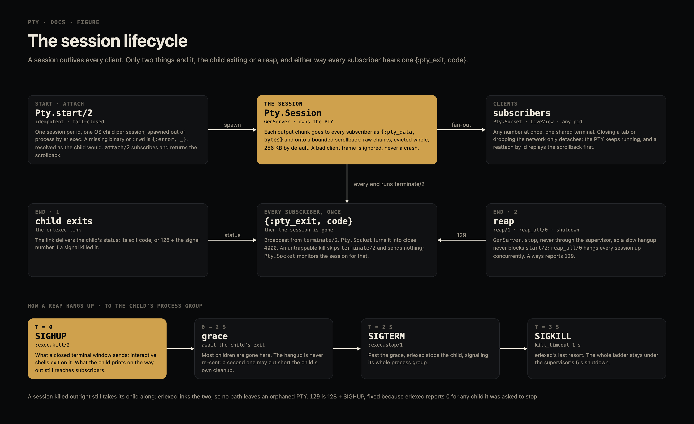
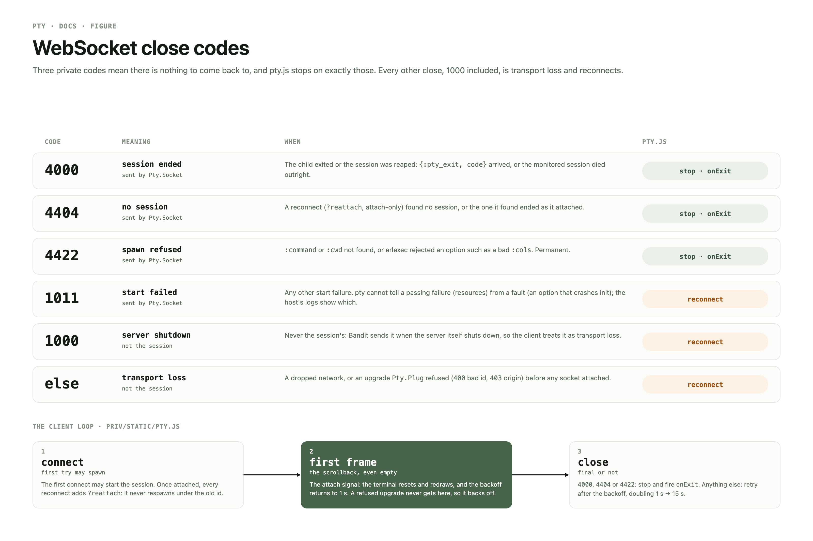
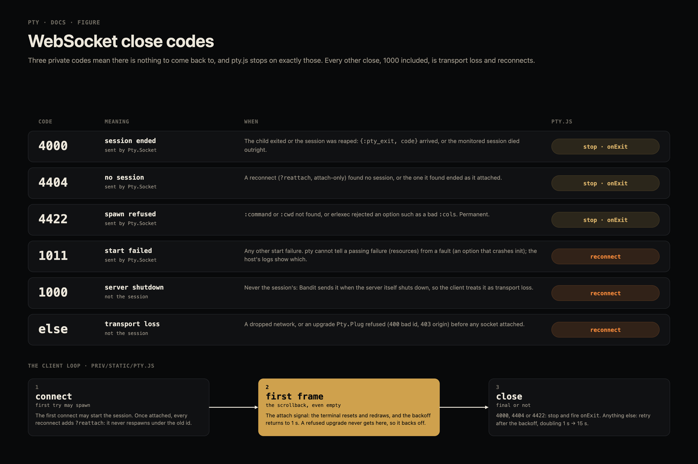

embeddable PTY sessions for Elixir hosts
erlexec drives one OS child per session, out of process; a session owns its PTY and outlives every client. Closing a tab, refreshing or dropping the network only detaches; reattaching by id replays the scrollback and rejoins the same live process, and any number of clients can share one terminal. The library serves nothing itself: the host owns the endpoint, the auth and the page.
Map
Every public call goes through the facade and takes a session as an id or a pid. The API, the integration recipes and the security model are in the README.


pty figures, board session-lifecycle.| path | holds |
|---|---|
| lib/pty.ex | the facade — every public call, id or pid |
| lib/pty/session.ex | the GenServer owning one PTY: spawn, fan-out, scrollback |
| lib/pty/client.ex | the transport contract and the shared frame decoder |
| lib/pty/socket.ex | the WebSock handler bridging one socket to a session |
| lib/pty/plug.ex | the upgrade gate: id validation, Origin check, hand-off |
| priv/static/pty.js | browser glue; the host hands xterm.js in |
| test/pty/ | ExUnit over real cat/sh PTYs — no mocks |
| test/js/ | bun test drives pty.js, unmodified, against hand-written fakes of the WebSocket, the timers and xterm.js |
Invariants
What every change must keep true.
- a session outlives every client — only the child exiting or a reap ends it.
- every end reaches subscribers as one
{:pty_exit, code}—129for a reap or crash — except an untrappable kill, which skipsterminate/2;Pty.Socketmonitors the session for that. A local subscriber over:max_lagmessages behind gets one{:pty_lagged}in place of further output, the live feed and a reap's relay alike, and is taken off the feed — yet still monitored, counted, and sent the one{:pty_exit, code}. A reap SIGHUPs, relays the child's last output, and after 2 s lets erlexec stop it (SIGTERM, then SIGKILL 1 s on, to the process group). A session's death, however abrupt, takes its child through the erlexec link. - reaps never go through the supervisor —
GenServer.stop, so a slow hangup never blocksstart/2;reap_all/0hangs up concurrently. A reap frees its id before the hangup, so astart/2meanwhile gets a fresh session, never the dying one, while a secondreap/1by id reaps that fresh one if there is one, else finds the dying one and returns once it is gone. start/2is idempotent and fail-closed on a missing binary or cwd, resolved as the child would (:cwd,:envPATH) — in the caller, outside the one supervisor every start shares, so a hung mount stalls only its own start.- a bad client frame is
:ignore, never a crashed session. - the first server frame is the scrollback, even empty — the attach signal.
pty.jsresets its backoff only then, and every reconnect after the first attach is?reattach, attach-only; a retry before it may still spawn. - idleness never closes a terminal, silence does — a terminal is idle whenever
its human is thinking, so
Pty.Socketpings every:ping_interval(30 s) and the browser's automatic pongs resetPty.Plug's idle:timeout(90 s, kept above the interval). A client gone half-open stops answering and is closed, so its subscription never pins a session. - a cross-origin browser upgrade is refused unless
:check_originadmits it.
Close codes
The client sends JSON text frames ({"t":"i","d":…}
input, {"t":"b","d":…} raw bytes, one per code point 0–255,
{"t":"r","cols":C,"rows":R} resize); the server sends raw output
as binary frames, the scrollback first. Three private close codes are final, and
pty.js stops on exactly those.
| code | meaning | pty.js |
|---|---|---|
| 4000 | the session ended — its child exited or it was reaped | stop · onExit |
| 4404 | a reattach found no session, or the one found ended as it attached | stop · onExit |
| 4422 | an invalid id, reattaching or not, or a refused spawn — :command or :cwd not found, or an option rejected, such as a bad :cols or a :max_lag that is no positive integer; permanent | stop · onExit |
| 1011 | any other start failure — pty cannot tell a passing failure (resources) from a fault (a malformed option); the host's logs show which | reconnect |
| 1013 | a subscriber fell more than :max_lag messages behind and was taken off the feed | reconnect · reattach, resync from scrollback |
| 1000 | never the session's: Bandit sends it on its own shutdown | reconnect |
| other | transport loss, or an upgrade Pty.Plug refused (400 bad id, 403 origin) — backed off, since the backoff resets only on attach | reconnect, 1 s → 15 s |


pty.js. Source: Claude Design canvas pty figures, board close-codes.Hazards
Traps a change can walk into.
- the shift sandbox —
mise trustthe worktree, copydeps/from main, compile withMIX_OS_CONCURRENCY_LOCK=0, and run the suite as exactlyshift-test mise x -C . -- mix test --cover(its profile allows/dev/ptmx; anything spliced in between breaks the exclusion). Its-Cmust sit under~/.grove/codeand its--logunder that tree (the ignoredtmp/), so a probe copy is a sibling of the worktree, never under~/.sandman. - erlexec reports status
0for any child it was asked to stop, racing the signal's own status — hence the fixed129for a reap. - exec-port's SIGHUP handler survives in a fork until
execve— a reap within a child's first milliseconds misses the hangup and waits out the 2 s grace. Tests clean up withdrop/1(an outright kill) for that reason. The hangup is deliberately not re-sent: a second HUP may cut short a child's own cleanup. - erlexec runs a
{:kill, cmd}under the BEAM's$SHELL -c, so a kill command is non-portable (nushell); the hangup is sent by:exec.kill/2. Originis compared withHost, so DNS rebinding is outside the check.- Input is unbounded — exec-port queues browser input without limit. Output is
bounded per local subscriber: one more than
:max_lag(1 000) messages behind gets a single{:pty_lagged}and is taken off the feed (the tmux resync model), where unbounded it grew the host VM by the child's whole output (64 MB in 2.5 s with zero reads). The hangup's relay is bounded the same way, and a lagged subscriber still hears the{:pty_exit, code}. A subscriber on another node is not measured:Process.info/2is local-only. - An outright kill reaches only the child's process group — a job an
interactive shell put in its own group (
sleep 100000 &) outlives a:killor a brutal supervisor kill; a reap's hangup reaches it through the shell.
Next
What the next shift does first. shift brief reads this list, and a landing that changes it edits it here.
bun test --coveragereports 100 % ofpty.jsbut enforces nothing, and bun measures lines and functions, not branches —mount()'s degrade paths are held by their test, not the metric: addbunfig.tomlwith[test] coverageThreshold = { functions = 1.0, lines = 1.0 }— the shift sandbox refuses writing bun config.list/0drops a session busy past the 1 s info timeout — unreproduced: ayesflood answers in 0 ms; find a stalled erlexec call first.- Sweep leftovers, confirmed and unfixed (s-20261019T0620Z): a restarted Registry leaves live sessions unregistered; scrollback replay can start mid-escape; the resize skip compares against the last requested size, not the PTY's; a lone UTF-16 surrogate drops a whole input frame; subscriber messages carry no session id.
- Redraw the close-codes and session-lifecycle boards of the
pty figurescanvas for1013and{:pty_lagged}(mise run figures) — the PNGs and their alt text predate backpressure. - A lagged
Pty.Socketdrains up to:max_lagqueued chunks before it closes1013, and a client slower than the child's output resyncs (RESET + ≤ 256 KB replay) about once a second while the burst lasts, since the first frame resets the backoff; a flush of queued{:pty_data}on lag and a backoff that survives a1013are the candidates. - A child that floods without end through SIGHUP and ignores SIGTERM is never SIGKILLed (probe:
trap '' TERM; trap 'while :; do echo x; done' HUP, ~480 k chunks/s, alive 10 s on, before and after backpressure) — exec-port's kill timer starves behind the output, so the reap never returns; confirm in erlexec and bound it (a session-side SIGKILL past the ladder).
pty · jgeschwendt/pty · the README is the API reference.